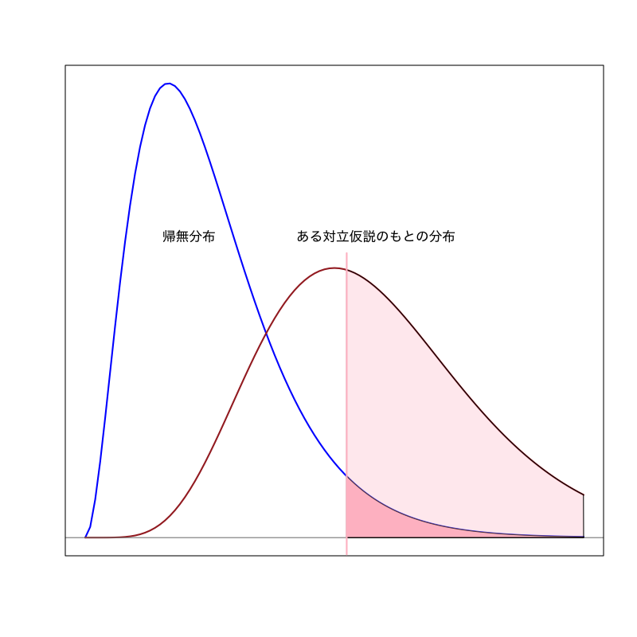

正規分布に基づく検定
確率・統計 - 第11講
(Press ? for help, n and p for next and previous slide)
前回のおさらい
- 統計的仮説検定
- 検定の手続き
- 帰無仮説と対立仮説
- 有意水準，棄却域，\(p\)-値
- 過誤と検出力
- 両側検定と片側検定
- 正規分布を用いた検定
- 平均値の差の検定
- 平均値の検定
統計的仮説検定
- ある現象・母集団に対して仮定された仮説の真偽を データに基づいて統計的に検証する方法
- 推定と大きく異なるのは， 母集団の分布に対して何らかの仮説を考えるところ
検定における仮説
帰無仮説 \(H_{0}\)
検定統計量の分布を予想するために立てる仮説
対立仮説 \(H_{1}\)
“帰無仮説が誤っているときに起こりうるシナリオ”として想定する仮説
検定の基本的手続き
- 仮説を立てる
- 仮説のもとで 検定統計量 が従う 帰無分布 を調べる
- 実際のデータから検定統計量の値を計算する
- 計算された検定統計量の値が
仮説が正しいときに十分高い確率で
得られるかどうかを判断する
- 棄却域 を用いる方法
- \(p\)-値 を計算する方法
検定の用語
- 仮説の判定
- 帰無仮説を 棄却 : 帰無仮説は誤っていると判断すること
- 帰無仮説を 受容 : 帰無仮説を積極的に棄却できないこと
- 検定の誤り
- 第一種過誤 : “正しい帰無仮説を棄却する” 誤り
- 第二種過誤 : “誤った帰無仮説を受容する” 誤り
- 検定の設計
- サイズ : “第一種過誤が起きる確率” を小さく
- 検出力 : “第二種過誤が起きない確率” を大きく

Figure 1: 有意水準が小さい場合

Figure 2: 有意水準が大きい場合
有意水準と\(p\)-値
有意水準
第一種過誤が起きる確率(サイズ)として許容する上限
\(p\)-値 (有意確率) : (検定統計量 \(T\), 棄却域 \(R_{\alpha}\))
\begin{equation} \text{(\(p\)-値)} =\min\{\alpha\in(0,1)|\text{\(T\) が\(R_{\alpha}\)に含まれる}\} \end{equation}- 検定統計量の値が棄却域に含まれる有意水準の最小値
有意水準と \(p\)-値の関係
\(p\)-値が有意水準未満のときに帰無仮説を棄却する
正規分布を用いた平均値の検定
問題
確率変数列の平均値が \(\mu\) と等しいか検定せよ．
\begin{equation} X_{1},X_{2},\dotsc,X_{n} \end{equation}検定問題
\begin{equation} X_i=\theta+\varepsilon_{i}, \quad i=1,\dotsc,n \qquad \varepsilon_{i}\sim\mathcal{N}(0,\sigma^{2}) \end{equation}を観測値の確率モデル (\(\sigma^{2}\) は既知) とするとき
\begin{equation} H_{0}: \theta=\mu \quad\text{vs}\quad H_{1}: \theta\not=\mu \end{equation}
検定統計量
\begin{equation} T=\frac{\sqrt{n}(\bar{X}-\mu)}{\sigma} \end{equation}は 帰無仮説が正しいとき標準正規分布に従う．
棄却域 (両側検定の場合)
\begin{equation} R_{\alpha} = \left(-\infty,-z_{1{-}\alpha/2}\right) \cup \left(z_{1{-}\alpha/2},\infty\right) \end{equation}
正規分布を用いた平均値の差の検定
問題
2つの確率変数列の平均値が等しいか検定せよ．
\begin{equation} X_{1},X_{2},\dotsc,X_{n}, \qquad Y_{1},Y_{2},\dotsc,Y_{m} \end{equation}検定問題
\begin{align} X_i&=\theta_{1}+\varepsilon_{1i}, \quad i=1,\dotsc,n \qquad \varepsilon_{1i}\sim\mathcal{N}(0,\sigma^{2})\\ Y_j&=\theta_{2}+\varepsilon_{2j}, \quad j=1,\dotsc,m \qquad \varepsilon_{2j}\sim\mathcal{N}(0,\sigma^{2}) \end{align}を観測値の確率モデル (\(\sigma^{2}\) は既知) とするとき
\begin{equation} H_{0}: \theta_{1}=\theta_{2} \quad\text{vs}\quad H_{1}: \theta_{1}\not=\theta_{2} \end{equation}
検定統計量
\begin{equation} T=\sqrt{\frac{nm}{n+m}}\frac{\bar{X}-\bar{Y}}{\sigma} \end{equation}は仮説が正しいとき標準正規分布に従う．
棄却域 (両側検定の場合)
\begin{equation} R_{\alpha} = \left(-\infty,-z_{1{-}\alpha/2}\right) \cup \left(z_{1{-}\alpha/2},\infty\right) \end{equation}
両側検定と片側検定
- 対立仮説によって棄却域の形は変わりうる
- 2つの薬の治験結果に対する仮説 :
- 古い薬(高価)と新しい薬(安価)の効能が変わらない
- 古い薬に比べて新しい薬の効能が改善した
両側検定
棄却域がある定数 \(a < b\) によって
\begin{equation} (-\infty,a)\cup(b,\infty) \end{equation}片側検定
棄却域がある定数 \(a\) によって
\begin{align} &(a,\infty)&&\text{(右片側検定)}\\ &(-\infty,a)&&\text{(左片側検定)} \end{align}
- 2つの薬の治験結果に対する仮説 :


演習
練習問題
以下の問に答えよ．
学生 30 人に， 一週間の昼食代を尋ねたところ， 平均 3280 円，標準偏差 950 円であることがわかった． 昼食代は正規分布に従い， 上記の標準偏差は正確に求められているとする．
このとき， 学生の平均的な一週間の昼食代は 3000 円より高いと言えるかを 有意水準 0.05 で考えなさい．
- \(z_{0.95}=1.64, z_{0.975}=1.96\)
練習問題
- 前問において\(p\)-値を計算する方法を考えよ．
平均に関する検定
観測値の仮定
確率モデル
\begin{equation} X=\mu+\varepsilon, \qquad \varepsilon\sim\mathcal{N}(0,\sigma^{2}) \end{equation}\begin{equation} X\sim\mathcal{N}(\mu,\sigma^{2}) \end{equation}- \(\sigma^{2}\) が未知の場合を考える
平均の検定
問題
\(\mu_{0}\) を既知の定数として， 平均 \(\mu\) が真の平均 \(\mu_{0}\) であるか否かを検定する．
\begin{equation} H_{0}:\mu=\mu_{0}\quad\text{vs}\quad H_{1}:\mu\neq\mu_{0} \end{equation}
考え方
- 平均と分散の推定量の性質
標本平均 : (正規分布に従う)
\begin{equation} \bar{X}=\frac{1}{n}\sum_{i=1}^nX_i \end{equation}不偏分散 : (定数倍すると\(\chi^{2}\)-分布に従う)
\begin{equation} s^{2}=\frac{1}{n{-}1}\sum_{i=1}^n(X_i-\bar{X})^{2} \end{equation}- 標本平均と不偏分散は互いに独立
\(\chi^{2}\)-分布

Figure 3: \(\chi^{2}\)-分布 (自由度\(3\))
- 見本空間 : \([0,\infty)\)
- 母数 : 自由度 \(\nu\)
密度関数 :
\begin{multline} f(x)= \frac{1}{2^{\nu/2}\Gamma(\frac{\nu}{2})}x^{\nu/2-1}e^{-x/2}\\ \Gamma(z)=\int_{0}^\infty e^{-t}t^{z-1}dt \end{multline}
- 特徴付け : 標準正規分布に従う \(\nu\) 個の確率変数の2乗和の分布
\(t\)-分布

Figure 4: \(t\)-分布 (自由度\(3\))
- 見本空間 : \((-\infty,\infty)\)
- 母数 : 自由度 \(\nu\)
密度関数 :
\begin{equation} f(x)= \frac{\Gamma\left(\frac{\nu+1}{2}\right)} {\sqrt{\nu\pi}\;\Gamma\left(\frac{\nu}{2}\right)} \left(1+\frac{x^{2}}{\nu}\right)^{-\frac{1}{2}(\nu+1)} \end{equation}
- 特徴付け : 標準正規分布と 自由度 \(\nu\) の \(\chi^{2}\)-分布に従う確率変数 \(Z,Y\) の比 \(Z/\sqrt{Y/\nu}\) の分布
Student の \(t\)-検定
検定統計量
\begin{equation} T =\frac{\sqrt{n}(\bar{X}-\mu_{0})}{s} =\frac{\sqrt{n}(\bar{X}-\mu_{0})/\sigma}{\sqrt{(n{-}1)s^2/\sigma^{2}/(n{-}1})} \end{equation}- 帰無分布は自由度 \(n{-}1\) の \(t\)-分布
- \(\sqrt{n}(\bar{X}-\mu_{0})/\sigma\) は標準正規分布に従う
- \((n{-}1)s^2/\sigma^{2}\) は自由度 \(n{-}1\) の\(\chi^{2}\)-分布に従う
- 両側検定
有意水準 : \(\alpha\)
\(t_{1{-}\alpha/2}(n{-}1)\) : 自由度 \(n{-}1\) の \(t\)-分布の \(1{-}\alpha/2\) 分位点を計算
棄却域
\begin{equation} R_{\alpha}= \left(-\infty,-t_{1{-}\alpha/2}(n{-}1)\right) \cup\left(t_{1{-}\alpha/2}(n{-}1),\infty\right) \end{equation}
平均の差の検定
問題
2種類のデータの平均が等しいか否かを検定する
\begin{equation} H_{0}:\mu_{1}=\mu_{2}\quad\text{vs}\quad H_{1}:\mu_{1}\neq\mu_{2} \end{equation}- Behrens-Fisher 問題
- 分散が同じ場合は \(t\)-検定に帰着
- 分散が異なる場合は正確かつ適切な検定は難しい
考え方
- 標本平均と不偏分散の性質
\(X_{1},\dotsc,X_{m}\) および \(Y_{1},\dotsc,Y_{m}\) の不偏分散
\begin{equation} s_{1}^{2}=\frac{1}{m{-}1}\sum_{i=1}^m(X_i-\bar{X})^{2},\quad s_{2}^{2}=\frac{1}{n{-}1}\sum_{i=1}^n(Y_i-\bar{Y})^{2}. \end{equation}- \(\bar{X}-\bar{Y},s_{1}^{2},s_{2}^{2}\) は互いに独立
- \((m{-}1)s_{1}^{2}/\sigma_{1}^{2}\) は自由度 \(m{-}1\) の \(\chi^{2}\)-分布に従う
- \((n{-}1)s_{2}^{2}/\sigma_{2}^{2}\) は自由度 \(n{-}1\) の \(\chi^{2}\)-分布に従う
Welch の \(t\)-検定
検定統計量
\begin{equation} T=\frac{\bar{X}-\bar{Y}}{\sqrt{s_{1}^{2}/m+s_{2}^{2}/n}} \end{equation}帰無分布は自由度 \(\hat{\nu}\) の \(t\)-分布 (Welch の近似)
\begin{equation} \hat{\nu} =\frac{(s_{1}^{2}/m+s_{2}^{2}/n)^{2}} {(s_{1}^{2}/m)^{2}/(m{-}1)+(s_{2}^{2}/n)^{2}/(n{-}1)} \end{equation}
- 両側検定
有意水準 : \(\alpha\)
\(t_{1{-}\alpha/2}(\hat{\nu})\) : 自由度 \(\hat{\nu}\) の \(t\)-分布の \(1{-}\alpha/2\) 分位点を計算
棄却域
\begin{equation} R_{\alpha}= \left(-\infty,-t_{1{-}\alpha/2}(\hat{\nu})\right) \cup\left(t_{1{-}\alpha/2}(\hat{\nu}),\infty\right) \end{equation}
演習
練習問題
- Welch の \(t\)-検定において \(p\)-値はどのように計算すればよいか述べよ．
分散に関する検定
分散の検定
問題
\(\sigma_{0}^{2}\) を既知の定数として， 分散 \(\sigma^{2}\) が \(\sigma_{0}^{2}\) であるか否かを検定する．
\begin{equation} H_{0}:\sigma^{2}=\sigma_{0}^{2}\quad\text{vs}\quad H_{1}:\sigma^{2}\neq\sigma_{0}^{2} \end{equation}
考え方
- 分散の推定量の性質
不偏分散 : (定数倍すると\(\chi^{2}\)-分布に従う)
\begin{equation} s^{2}=\frac{1}{n{-}1}\sum_{i=1}^n(X_i-\bar{X})^{2} \end{equation}
\(\chi^{2}\)-検定
検定統計量
\begin{equation} \chi^{2}=\frac{(n{-}1)s^{2}}{\sigma_{0}^{2}} \end{equation}- 帰無分布は自由度 \(n{-}1\) の \(\chi^{2}\)-分布
- 両側検定
有意水準 : \(\alpha\)
\(\chi^{2}_{\alpha/2}(n{-}1)\), \(\chi^{2}_{1{-}\alpha/2}(n{-}1)\) : 自由度 \(n{-}1\) の \(\chi^{2}\)-分布の \(\alpha/2\), \(1{-}\alpha/2\) 分位点を計算
棄却域
\begin{equation} R_{\alpha}= \left(0,\chi^{2}_{\alpha/2}(n{-}1)\right) \cup\left(\chi^{2}_{1{-}\alpha/2}(n{-}1),\infty\right) \end{equation}
分散の比の検定
問題
2種類のデータの分散が等しいか否かを検定する．
\begin{equation} H_{0}:\sigma_{1}^{2}=\sigma_{2}^{2}\quad\text{vs}\quad H_{1}:\sigma_{1}^{2}\neq\sigma_{2}^{2} \end{equation}
考え方
- 不偏分散の性質
\(X_{1},\dotsc,X_{m}\) および \(Y_{1},\dotsc,Y_{n}\) の不偏分散
\begin{equation} s_{1}^{2}=\frac{1}{m{-}1}\sum_{i=1}^m(X_i-\bar{X})^{2},\quad s_{2}^{2}=\frac{1}{n{-}1}\sum_{i=1}^n(Y_i-\bar{Y})^{2}. \end{equation}- \(s_{1}^{2},s_{2}^{2}\) は互いに独立
- \((m{-}1)s_{1}^{2}/\sigma_{1}^{2}\) 自由度 \(m{-}1\) の \(\chi^{2}\)-分布に従う
- \((n{-}1)s_{2}^{2}/\sigma_{2}^{2}\) は自由度 \(n{-}1\) の \(\chi^{2}\)-分布に従う
\(F\)-分布

Figure 5: \(F\)-分布 (自由度\(5,10\))
- 見本空間 : \([0,\infty)\)
- 母数 : 自由度 \(\nu_{1},\nu_{2}\)
密度関数 :
\begin{multline} f(x)= \frac{(\frac{\nu_{1}}{\nu_{2}})^{\frac{\nu_{1}}{2}}}{B(\frac{\nu_{1}}{2},\frac{\nu_{2}}{2})} \frac{x^{\frac{\nu_{1}}{2}-1}}{(1+\frac{\nu_{1}}{\nu_{2}}x)^{\frac{\nu_{1}+\nu_{2}}{2}}}\\ B(x,y)=\int_{0}^{1}t^{x-1}(1-t)^{y-1}dt \end{multline}
- 特徴付け : 自由度 \(\nu_{1},\nu_{2}\) の \(\chi^2\)-分布に従う確率変数 \(Y_{1},Y_{2}\) の比 \((Y_{1}/\nu_{1})/(Y_{2}/\nu_{2})\) の分布
\(F\)-検定
検定統計量
\begin{equation} F =\frac{s_{1}^{2}}{s_{2}^{2}} =\frac{(m{-}1)s_{1}^{2}/\sigma_{1}^{2}/(m{-}1)}{(n{-}1)s_{2}^{2}/\sigma_{2}^{2}/(n{-}1)} \end{equation}- 帰無分布は自由度 \(m{-}1,n{-}1\) の \(F\)-分布
- \((m{-}1)s_{1}^{2}/\sigma_{1}^{2}\) 自由度 \(m{-}1\) の \(\chi^{2}\)-分布に従う
- \((n{-}1)s_{2}^{2}/\sigma_{2}^{2}\) は自由度 \(n{-}1\) の \(\chi^{2}\)-分布に従う
- 両側検定
有意水準 : \(\alpha\)
\(F_{\alpha/2}(m{-}1,n{-}1)\), \(F_{1{-}\alpha/2}(m{-}1,n{-}1)\) : 自由度 \(m{-}1,n{-}1\) の \(F\)-分布の \(\alpha/2,\,1{-}\alpha/2\) 分位点を計算
棄却域
\begin{equation} R_{\alpha}= \left(0,F_{\alpha/2}(m{-}1,n{-}1)\right) \cup\left(F_{1{-}\alpha/2}(m{-}1,n{-}1),\infty\right) \end{equation}
演習
練習問題
以下の問に答えよ．
1年生 40 人と 2年生 35 人に， 年間の書籍代を尋ねたところ， 1年生は平均 13300 円，標準偏差 900 円， 2年生は平均 12800 円，標準偏差 800 円 であることがわかった． 各学年の書籍代は正規分布に従うことがわかっており， 上記の平均，標準偏差は標本平均および不偏分散から求めたものとする．
このとき， 1年生と2年生の平均的な書籍代は同じと言えるかを 有意水準 0.05 で考えなさい．
- \(F_{0.05}(39,34)=0.58, F_{0.025}(39,34)=0.52\), \(F_{0.95}(39,34)=1.74, F_{0.975}(39,34)=1.95\), \(t_{0.95}(73)=1.67, t_{0.975}(73)=1.99\)
今回のまとめ
- 分散未知の正規分布を用いた検定
- 平均値の検定
- 平均値の差の検定
- 分散の検定
- 分散の比の検定